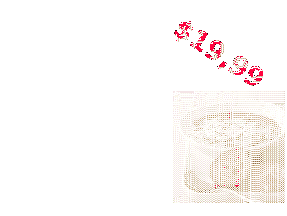

Siguiente: Conclusiones y trabajos futuros Subir: Experimentos y Resultados Anterior: Experimento 2 Índice General
Como segunda alternativa, se planteó proveer información inherente a un producto comestible de forma publicitaria, en el que se brinda su precio y una imagen de un plato preparado con el mismo. El resultado del prototipo se puede visualizar en la secuencia de imágenes de la Fig. 4.9, donde: la Fig. 4.9a es la imagen patrón, la Fig. 4.9b es el objeto de realidad aumentada a sobreimprimir (el fondo blanco en la imagen es transparente) y las imágenes de la Fig. 4.9c a la Fig. 4.9f, representan diferentes capturas de la secuencia de video en la etapa de ejecución. Cabe aclarar que se presentan sólo algunas de las detecciones exitosas. Un video de este prototipo en condición  de iluminación puede ser visto en la url: http://youtu.be/j1xPZkglJHs.
de iluminación puede ser visto en la url: http://youtu.be/j1xPZkglJHs.
Los prototipos de realidad aumentada desarrollados aquà son sólo algunas de las aplicaciones posibles, y se pueden pensar en aplicaciones más avanzadas, como por ejemplo que provean una interactividad mayor con el usuario, a partir de la introducción de audio, videos, animaciones, etc.
|
[][] [][] [][] [][] |